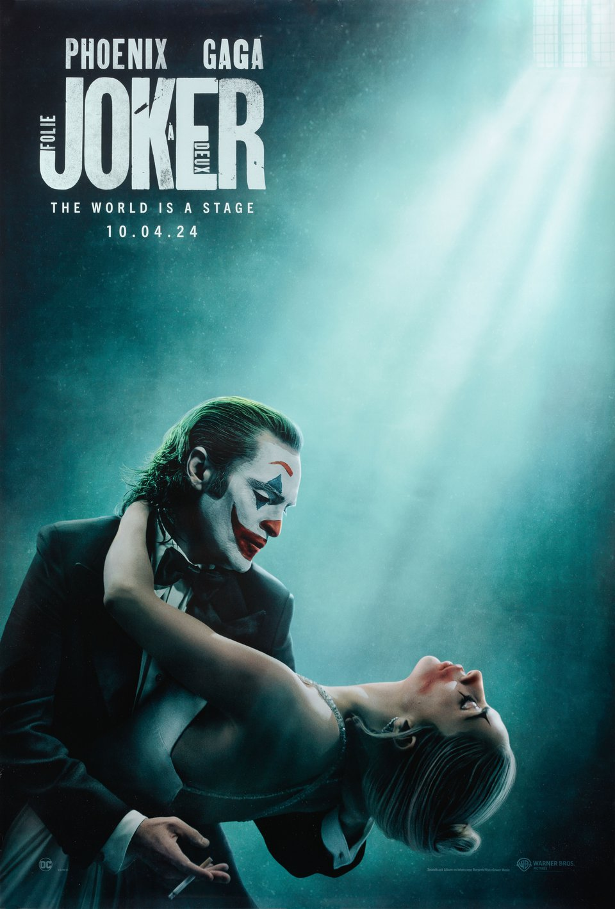
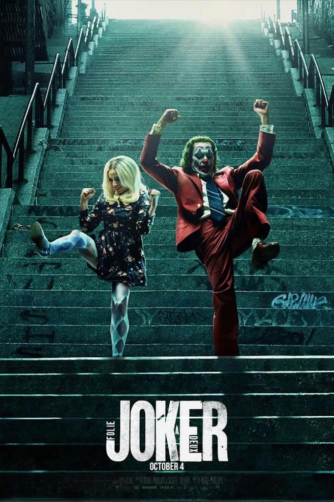
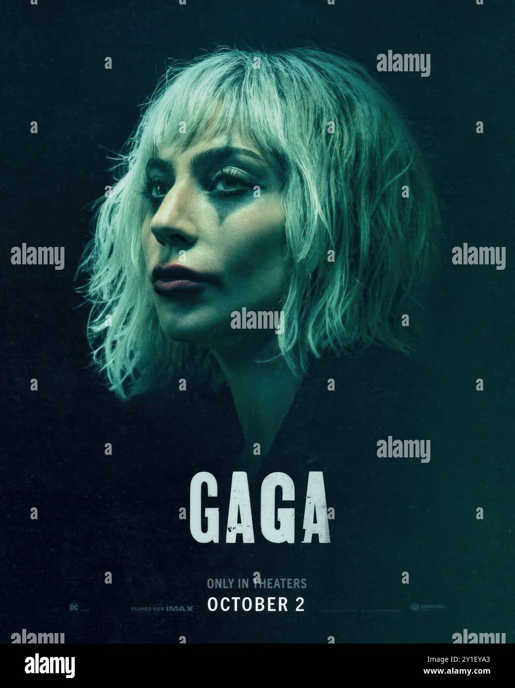
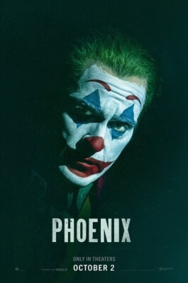
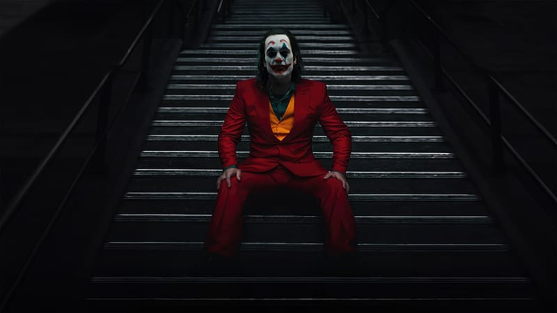
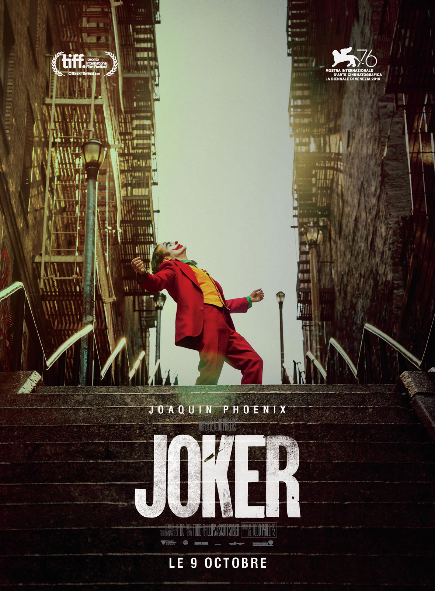

Official Poster 1

Teaser Poster

Character Poster

Character Poster

Character Poster

Official Poster 2
A mesmerizing yet deeply flawed sequel that struggles to find emotional balance.
David Ehrlich, IndieWire

 2/5
2/5
Visually stunning, but the narrative feels more fragmented than purposeful.
Peter Debruge, Variety
2.5/4
A polarizing film that is undeniably bold, provocative, and hard to dismiss.
Stephanie Zacharek, Time
C+
A daring experiment that does not always connect, but never lacks conviction.
Justin Chang, Los Angeles Times
2/5
Its artistic ambition is admirable, but the pacing and focus are uneven.
Robbie Collin, The Telegraph
2.5/4
Joaquin Phoenix remains electric, even when the script loses direction.
Manohla Dargis, The New York Times
C+